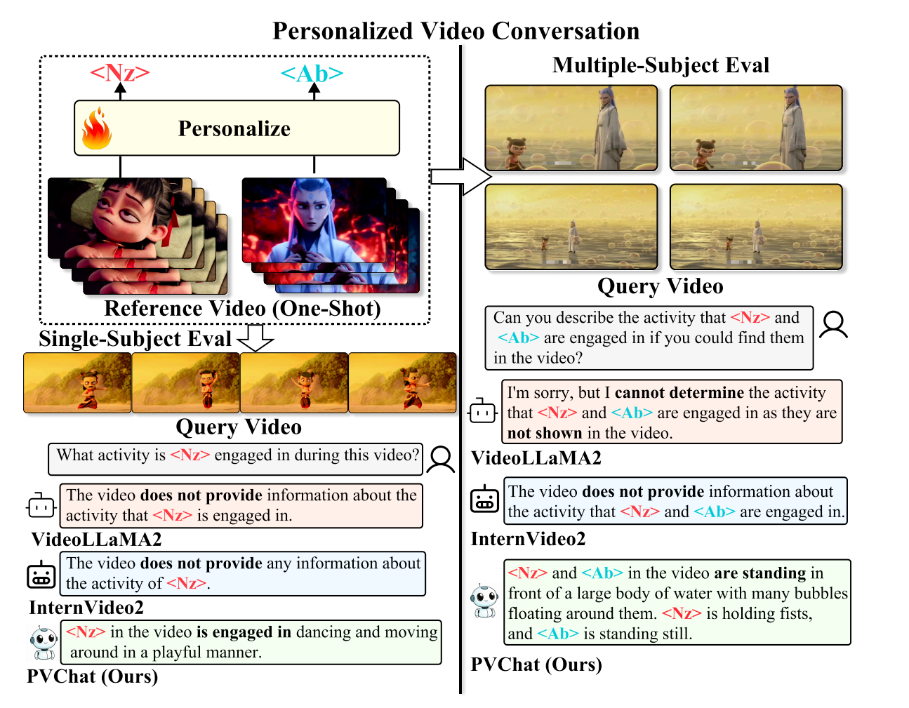
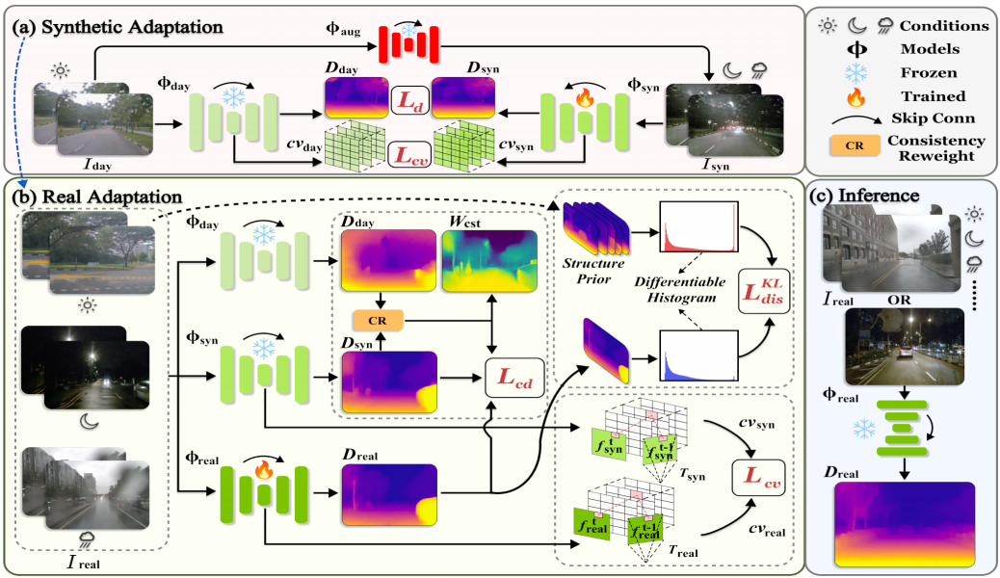
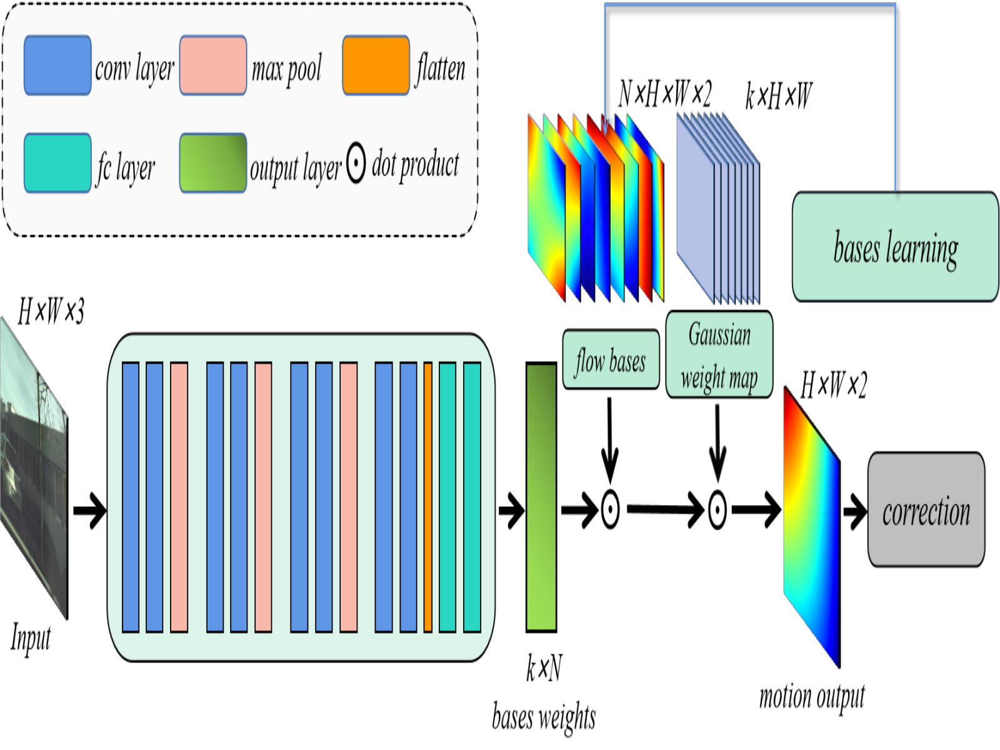
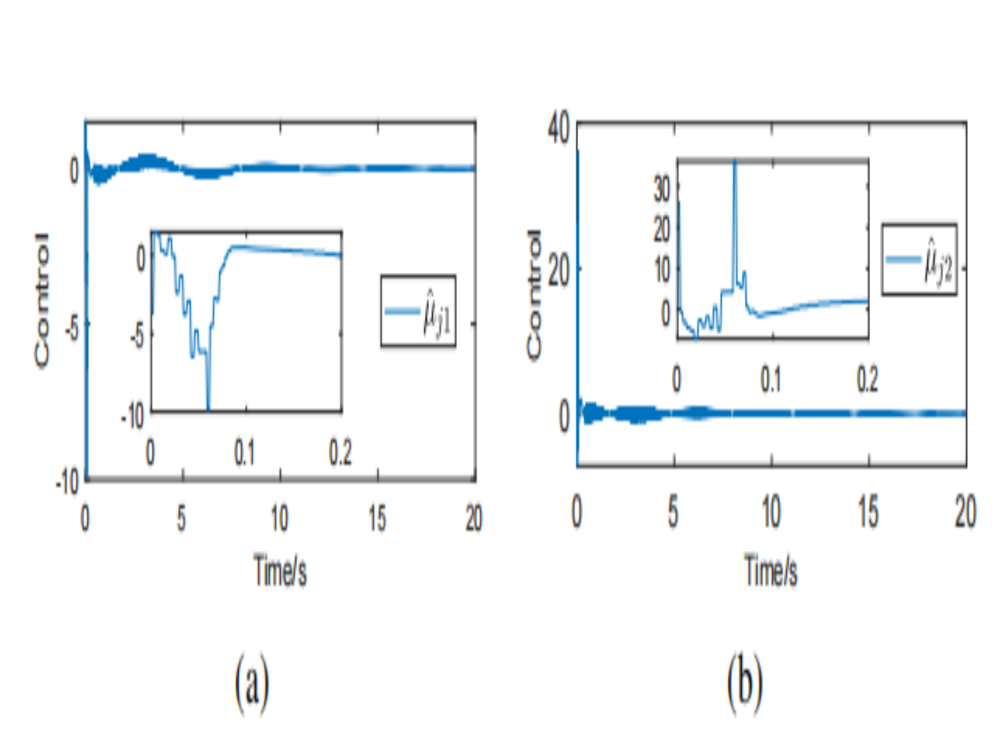

News
|
[Feb. 2025] "Synthetic-to-Real Self-supervised Robust Depth Estimation via Learning with Motion and Structure Priors" is accepted by CVPR 2025!
[Jul. 2023] "Deep Homography Mixture for Single Image Rolling Shutter Correction" is accepted by ICCV 2023!
[Jan. 2023] "Event-Triggered Learning Robust Tracking Control of Robotic Systems With Unknown Uncertainties" is accepted by TCAS-II!
|
Publications
|

|
PVChat: Personalized Video Chat with One-Shot Learning
Yufei Shi*, Weilong Yan*, Gang Xu, Yumeng Li, Yuchen Li, Zhenxi Li, Fei Richard Yu, Ming Li, Si Yong Yeo
preprint, 2025
PDF /
Code
The first personalized ViLLM that enables subject-aware question answering (QA) from a single video for each subject.
|
|

|
Synthetic-to-Real Self-supervised Robust Depth Estimation via Learning with Motion and Structure Priors
Weilong Yan, Ming Li, Haipeng Li, Shuwei Shao, Robby T. Tan
CVPR, 2025
PDF /
Code
A synthetic-to-real self-supervised depth estimation method leveraging motion and scene priors, from daytime to adverse conditions.
|
|

|
Deep Homography Mixture for Single Image Rolling Shutter Correction
Yan Weilong, Robby T. Tan, Zeng Bing, Liu Shuaicheng
ICCV, 2023
PDF /
Code
We propose a deep homography mixture model using learned motion bases from natural video data to correct rolling shutter distortion.
|
|

|
Event-Triggered Learning Robust Tracking Control of Robotic Systems With Unknown Uncertainties
Zhinan Peng, Yan Weilong, Rui Huang, Hong Cheng, Kaibo Shi, Bijoy Kumar Ghosh
IEEE TCAS-II, 2023
PDF
This work addresses tracking control of robotic systems with unmatched uncertainty using adaptive dynamic planning (ADP).
|
Academic Services
|
Serve as a reviewer for CVPR 24, 25; ECCV 24; AAAI 25; ICCV 25; IROS 25; TMLR.
Serve as a graduate assistant for EE2211 (2024, 2025), EE5201 (2024).
|
|
{kind=link}